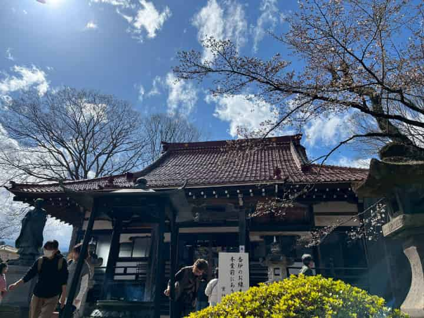

【2026年春】實相寺・神代桜満開レポ！
花見・撮影・混雑・駐車場を徹底チェック
☆實相寺（神代桜）— 圧倒的な存在感 ☆
場所に着いた瞬間、誰もが息をのむ光景が広がっていました。幹の太さと枝振り、その上に咲き誇る花の量は案内板や写真で見る以上に迫力があります。桜はちょうど見ごろで、「桜花爛漫」という表現がぴったりの状態でした。個人的にはあと2日ほど（29日あたり）見頃が持つのではないかと感じました。
観光客は数百人規模に感じられましたが、臨時駐車場と多数の係員による誘導があるため、駐車自体はスムーズに行えました。駐車料金は臨時で貸し出される最寄りのスペースが400〜500円前後。車での来訪が事実上必須なので、事前にルートと時間を決めておくと安心です。
★写真一覧★




スポット情報（春の注記）
- 所在地：山梨県北杜市武川町山高2763
- アクセス：須玉ICから車で約15分（桜期は渋滞が発生します）
- 駐車場：臨時駐車場あり（400〜500円目安）。係員が誘導してくれるため安心。
- 見学料：無料（維持のための寄付箱あり）
- 公式：jindaizakura.com（公式）
☆当日の混雑と駐車について詳報☆
土日での訪問でしたが、臨時駐車場と誘導員が手厚く配置されており、停めるまでのストレスは想像より少なかったです。実際には数百人レベルの来訪がある印象ですが、皆さんスマートに係員の指示に従っているため列の流れ自体は円滑でした。
駐車場の料金は近隣の臨時スペースで400〜500円。小銭の用意があるとスムーズです。公共交通は本数が限られるため、時間に余裕を持った運転計画をおすすめします。
注意点とマナー
- ゴミは必ず持ち帰ること（会場には分別箱が少ない）。
- 人混みで三脚の長時間設置は迷惑になるため短時間のみ推奨。
- 境内は歩道が狭い場所もあるため、譲り合いの精神で動くこと。
☆撮影とベストタイムのアドバイス☆
おすすめは朝一（開門直後）か夕方の柔らかい光。特に朝は人が少なく、ゆっくりと構図を選べるため写真を撮る人には最適です。夕方は逆光気味に撮ることで花びらが透けて美しく写ります。
レンズは広角〜標準（24〜70mm程度）が使いやすく、幹の迫力を出したい場合は標準〜中望遠（50〜135mm）を持って行くのがよいでしょう。手持ちでのスナップが基本ですが、三脚使用は他の人の邪魔にならない場所で短時間に留めてください。
☆周辺情報：食事・立ち寄りスポット☆
周辺には小さなお土産屋や食事処が点在しています。桜の季節は屋台や臨時店舗も出ることがあるため、軽食や地元の名物を試してみるのもおすすめです。時間に余裕があれば、近隣の道の駅で地域産品をチェックしてみてください。
☆同じ場所・別季節の比較（内部リンク）☆
冬に訪れたレポートも公開しています。季節ごとの表情を比べると、同じ場所でも印象が大きく変わるのが面白いところです。詳しくは冬レポートをどうぞ： 【實相寺・武田八幡宮・山縣神社 2026年初詣レポ】
☆まとめと次回の狙い目☆
実際に現地を歩いてみると、写真や噂以上の感動がありました。神代桜は樹齢を感じさせる風格があり、花が満ちた姿は特別です。今シーズンはおそらく29日あたりまで見頃が続きそうなので、都合のつく方は29日までの訪問を検討してみてください。
最後に一言。桜は景色だけでなく、そこに集う人々の表情や境内の空気も魅力です。平日・早朝・夕方のいずれかを狙って、ゆっくりと時間を過ごすことをおすすめします。